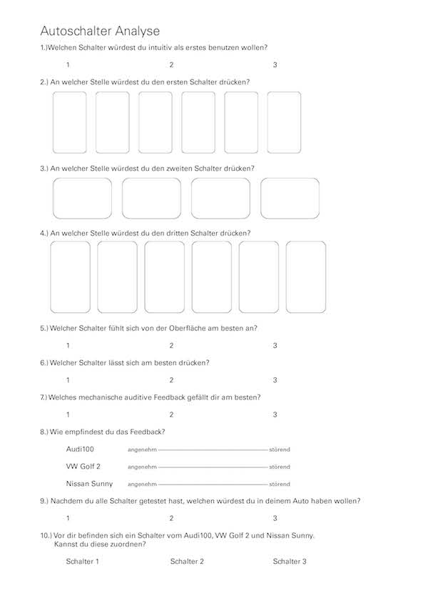

超级按钮
第三学期, 小组项目


项目介绍
今天的技术发展让我们越发感到视觉感知的局限性，虚拟按钮可以尽可能地拟物化设计，但却并不能带来如真实按钮般的触感，这其实也意味着我们的感知并没有被充分利用。而虚拟按钮也渐渐让我们意识到触感设计的重要性。
调研和分析
我们分析了大量的按钮设计，总结出按钮在设计时主要考虑的因素，如材质、颜色、形状、大小、图标、按压的方式、按压后的声音反馈等等。下图中的三个不同按钮，分别在大小、材质以及按压方式上都有所不同。在问卷中，我们主要观察被访问者最愿意先触碰哪个按钮，触碰各个按钮的位置，哪一个按钮按压最为舒适，被测试者是否能分辨这些按钮来自于何种汽车品牌等。


调查结果显示，按钮的声音反馈成为了评定按钮好坏的最关键性因素，于是我们决定针对声音反馈设计一个反馈探究实验。值得一提的是，调查结果还显示，除了本身按钮的设计因素，因为测试者性别、年龄的不同，测试结果也出现了较大的差异。
设计
最终的设计方案分为两部分，两排（分别为A和B组）虚拟按钮，一排（C组）真实按钮，它们的大小、间距以及颜色都保持一致。我们一共提供了3大类别的按钮声音，分别为机械类声音、音调类以及电脑常用音，每个大类分别又有4个不同声音可供选择。默认情况下，越小的按钮发出的声音越小，但用户除了可以更改不同的按钮声音外，还可以切换声音大小的顺序。下图分别是真实按钮的设计过程。以及我们使用VVVV实现的虚拟按钮。


虚拟按钮

Code - VVVV

测试过程
说明：三排按钮在大小、颜色、间距以及声音反馈上都保持一直，A和C组按钮点按后无视觉反馈，B组点按后颜色变深，A和B组无触感反馈。